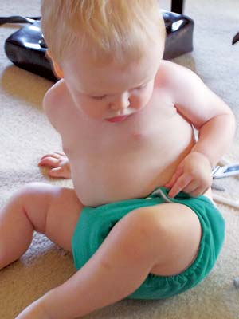

If there’s a new bundle of joy in your family, you’ll discover it’s easier than ever to find eco-friendly, natural baby ware without compromising on cost, convenience or comfort. Here are some great products that make for happy and healthy early years.
Dress baby’s derrière in reusable Fuzzi Bunz or Happy Heiny’s washable diapers, which are just as effective as disposables, but without the environmental and economic burdens. Parents can customize these diapers by adding a super-absorbent insert into their pocket openings. Both brands are easy to clean and have soft microfleece inner linings to pull moisture away from baby’s skin, along with reinforced leg openings to prevent leaks. The adjustable waist and leg settings fit every baby’s unique curves, and Fuzzi Bunz have a series of sturdy snaps that let the diapers grow along with your little one. Because a dry bottom needn’t be a dull bottom, both Fuzzi Bunz and Happy Heiny’s come in a rainbow of colors and patterns. ($15.95 to $19.95 each, www.fuzzibunzstore.com; $19.99 to $27.97 each, www.happyheinys.com)
When they’re not being cooed at and cuddled, babies spend most of their time in cribs - all the more reason to invest in a nontoxic crib mattress. Be sure to avoid polybrominated diphenyl ethers (PBDEs), the toxic flame retardants often used in mattresses (some states prohibit the manufacture and distribution of products containing these). One safe option is the No Compromise crib mattress, which is cushioned with organic cotton that the manufacturer says hasn’t been bleached, dyed or chemically grown. Its surface is made of nontoxic polyethylene plastic that’s waterproof and stain-resistant, and natural flame retardants such as baking soda and silica replace PBDEs. Firm and hypoallergenic, this mattress lets you rest easy (when you get to!) knowing baby is sleeping safely. ($259, www.naturepedic.com)
Plastic bottles can contain bisphenol A, a chemical that can leach into a bottle’s contents and has been linked to a string of health problems. To ensure baby’s drink is clean and safe, consider switching to glass bottles, or fill up the stainless steel Klean Kanteen. This lightweight, durable alternative holds 12 ounces and fits perfectly in tiny hands. Baby drinks from a soft sippy cap fashioned out of non-leaching plastic. ($17.95, www.kleankanteen.com)
The ERGO Baby Carrier is the perfect way for parents to stay active or enjoy an adventure with baby. Easily converted to back, front and hip positions, the ERGO is hands-free and keeps baby’s weight evenly distributed on your body to prevent physical strain. Available in organic fabric, the ERGO is comfortable for both you and baby, and with its infant insert, one carrier can last through every stage of your child’s growth up to 40 pounds. ($92 to $105, www.ergobabycarriers.com)
Soft, adorable and all-natural, Foundlings are ideal cuddle companions. Choose from a lovable bunny, puppy, bear, elephant, turtle or whale. According to the manufacturer, all are stuffed with unbleached cotton clippings and wrapped in 100 percent organic cotton. Foundlings are machine washable and have embroidered eyes for extra safety. ($9.95 to $29.95, www.peacetoys.com)
You can find more fun, natural and organic baby products at Ecobaby Organics. Canada residents can visit Parenting By Nature.
|
 KENDALL HEIMAN Fuzzi Bunz reusable diapers are absorbent and easy to clean. Adjustable snaps allow them to grow with baby. |
ERGO Introduce your little one to the world in a hands-free, back-friendly Ergo baby carrier. |
|